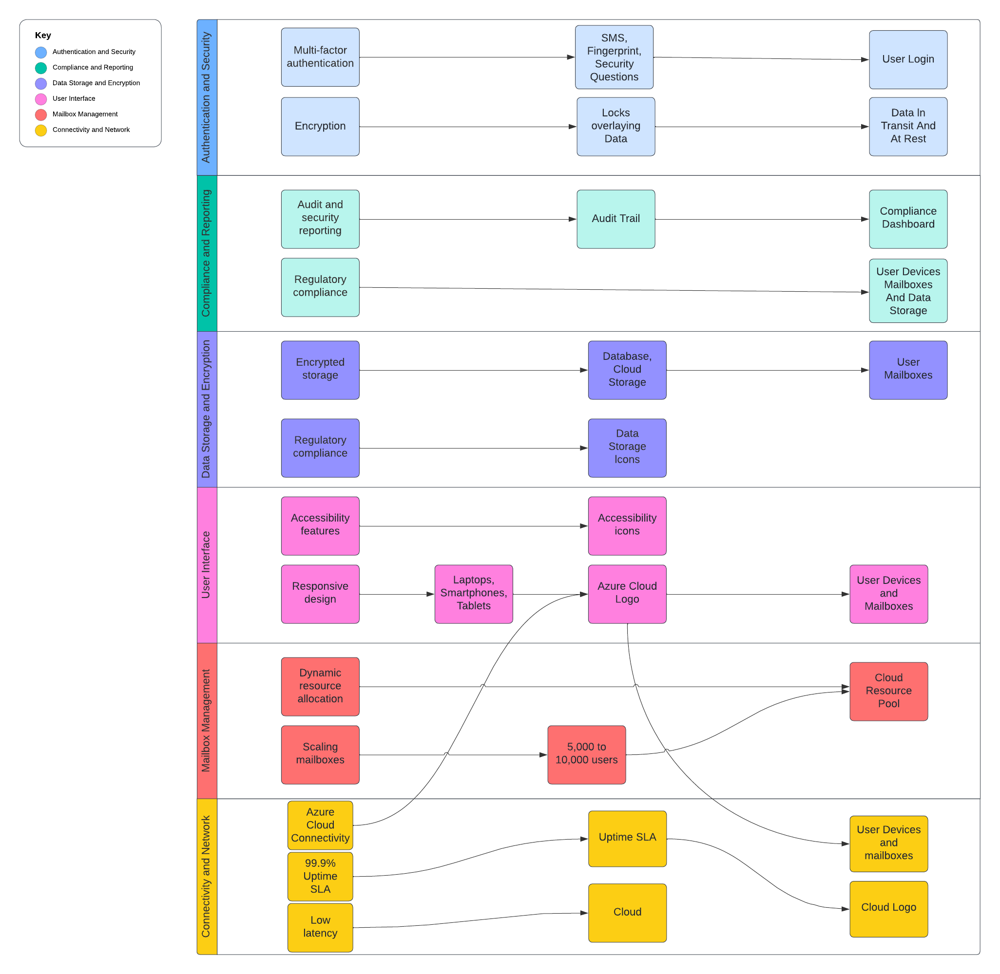
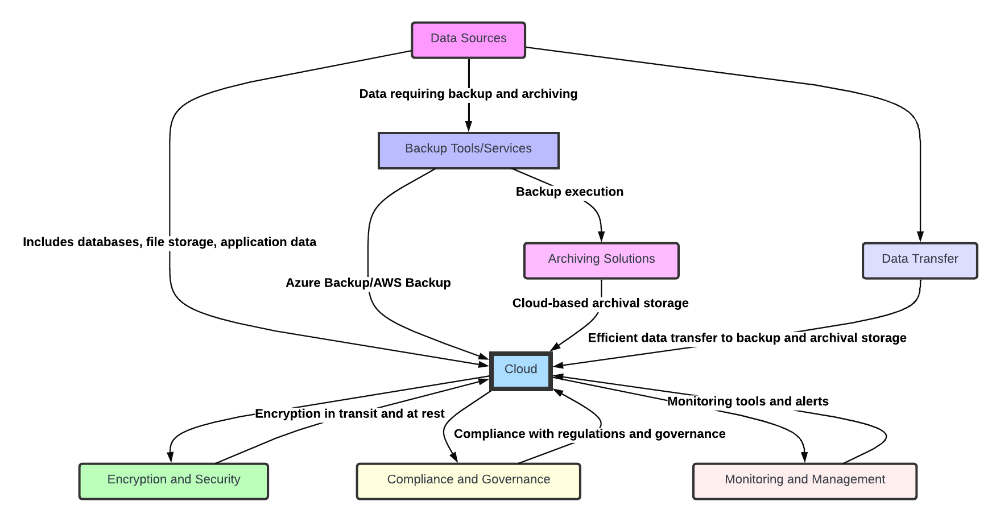
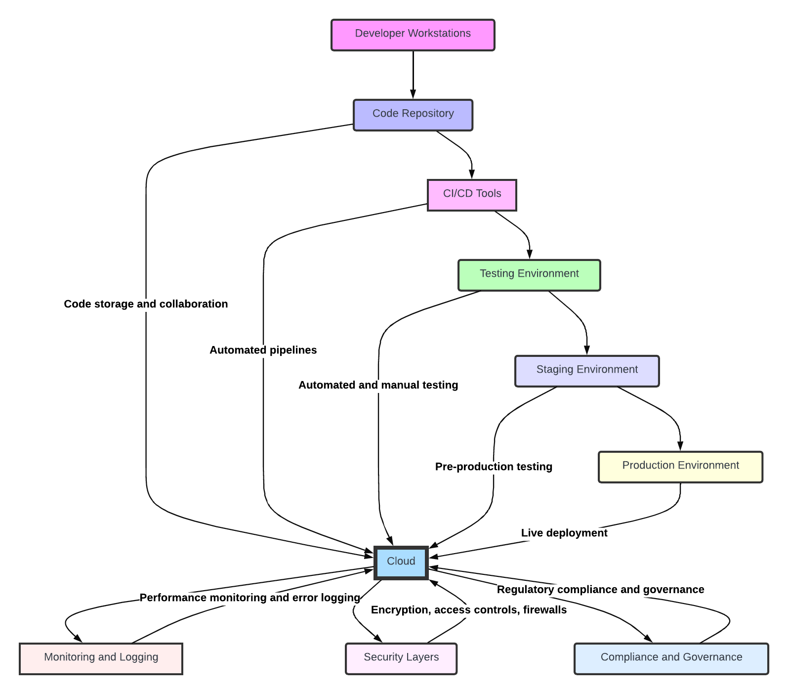

ARCHITECTURE + OPERATIONS / CASE STUDY
Deployment architecture & operational readiness
Bring cloud policies, deployment diagrams, backup planning, and practical training materials together for the BallotOnline case study.
Context: BallotOnline academic case study and learning environment.
Cloud Adoption Policy & Strategy
Developed a comprehensive cloud adoption policy to align BallotOnline's IT policies with cloud strategies
- Created a Cloud Adoption Policy Addendum documenting best practices and governance for cloud migration
- Analyzed existing service level agreements and proposed modifications to support cloud services
- Conducted a risk assessment and developed mitigation strategies
Key Takeaways
Developed a thorough understanding of cloud policy development and aligning IT policies with cloud strategies
Cloud Deployment Architecture
Designed a scalable and secure cloud deployment architecture tailored to BallotOnline's requirements
- Collaborated with stakeholders to understand business and technical needs
- Designed a secure cloud architecture using AWS services, following the AWS Well-Architected Framework
- Created detailed diagrams outlining the architecture components and their interactions
Key Takeaways
Gained hands-on experience in architecting secure and scalable multi-cloud environments
Below are cloud architecture diagrams:



Backup & Archive Deployment
Implemented cloud backup and archiving solutions to enhance data resilience for BallotOnline
- Configured AWS S3 & Glacier through designing a backup solution using lifecycle policies for retention and archives
- Outlined deployment procedures by documenting step-by-step procedures for backup deployment and management
- Enabled cross-region replication for high availability and disaster recovery
Key Takeaways
Improved expertise in cloud storage cost optimization, data durability, and disaster recovery planning
Training & Operations Guide
Developed comprehensive training materials to support BallotOnline's transition to cloud-based systems
- Created an Admin Guide that provided detailed instructions on managing cloud services, permissions, and monitoring
- Developed an End-User Guide that assists non-technical staff in using cloud-based applications securely
Download the training guides below:
Key Takeaways
Strengthened my ability to translate technical concepts into accessible training materials for various audiences